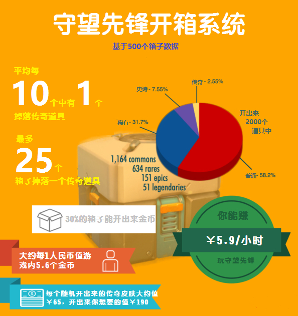

开箱机制
守望先锋的玩家升级系统很简单，多玩，多打，然后升级，送你个补给箱，打开后会送你四样不同稀有度的道具。你也可以用rmb买箱子开道具。
游戏里有两种办法得到你想要的道具，一种是你开箱子拿到了还有一种办法是攒足够的金币来买。当然了金币也是从箱子里开出来的，但是也很稀有。
所以说，到底开多少个箱子能拿到一个传奇皮肤?你能开出来多少金币呢?
开箱子机制是如何工作的？
正如炉石传说的开包机制一样，“暴雪游戏里没有‘随机‘掉落这一概念”，
这样就保证了炉石中最多每开40包牌就有一个传说级别卡牌。这使我们相信这两个游戏的开箱（包）机制应该是类似的。
到底这个开箱机制在守望先锋里是如何工作的，所以我们决定通过数学分析的方法来研究研究。
通过大量的开箱视频，我们得出了一些简单的结论：
1. 橙色传奇道具是最稀有的，游戏里直接购买价格为1000金币
2. 紫色史诗道具比传奇稍微容易得到一些，直接购买价格为250金币
3. 每个箱子都会有蓝色稀有道具除非箱子里开出了传奇或史诗级别道具，直接购买价格为75金币。
4. 每个箱子都会有普通道具，直接购买价格为25金币。
平均每10个箱子你能开出一个传奇道具!
在500个箱子里，我们记录了51个传奇道具，平均每9.8个箱子能开出一个传奇道具，取整就是10个箱子。像我们之前提到的，
最多25个箱子里一定会开出一个传奇道具，这里面有许多不确定性，你有可能每10个箱子就能开出来一个，
也有可能25个才开出来一个或者像之前的例子，第24个箱子开出来了两个传奇道具都是有可能的。
至于史诗道具，500个箱子开出了151个史诗级别道具，大约每3.3个箱子能开出来一个。如果开少量的箱子，
大概每4个箱子能开出来一个;如果是大量的箱子，那么意味着出现史诗的频率能比3.3更高。
500个箱子中，每个箱子大约有1.27个稀有道具，2.33个普通道具。
准确数据如下：
1164 个普通 - 58.2% 开出来的道具, 每个箱子中有 2.33 个。
634 个稀有 - 31.7% 开出来的道具, 每个箱子中有1.27 个。
151 个史诗- 7.55% 开出来的道具, 每个箱子中有 0.30 个。
51 个传说 - 2.55% 开出来的道具, 每个箱子中有 0.10 个。